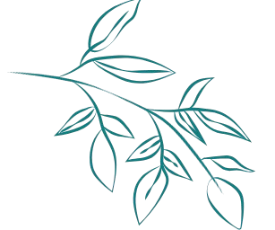

Plantas
The temperature should be balanced in the range of 20 to 30 °C.
El nivel de oxígeno debe estar equilibrado en el rango de 4 a 8 ppm.
The hardness should be balanced in the range of 50 to 150 ppm.
Peces
The pH should be balanced in the range of 3.5 to 7.5.
The temperature should be balanced in the range of 20 to 30 °C.
The oxygen level should be balanced in the range of 4 to 8 ppm.
The hardness should be balanced in the range of 50 to 150 ppm.